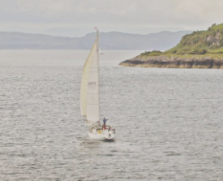

Sailing page
Scotland is overflowing with wild, watery expanses. If you have always dreamed of navigating your way around distant isles and canals, being a sea captain or gliding gracefully across a misty loch, you’re on the right course. Scotland has a seafaring adventure for everyone, from novice sailors to experienced skippers.

Sailing in Scotland
Here are a few suggestions for sailing in Scotland
- Places to drop anchor - Mull of Kintyre, Firth of Clyde, Orkney & Shetland
- Bareboat charters - Most - but not all - charter companies are based on the west coast and offer a wide variety of boats. Bareboat charters do not provide a crew or a skipper, so you can sail away on your own terms and follow your own itinerary.
- Skippered charters - If you're new to sailing or even if you're an experienced sailor but new to Scottish waters, why not charter a skippered vessel and let an experienced hand take over and do the organising, navigating and sailing?
Return to Home page